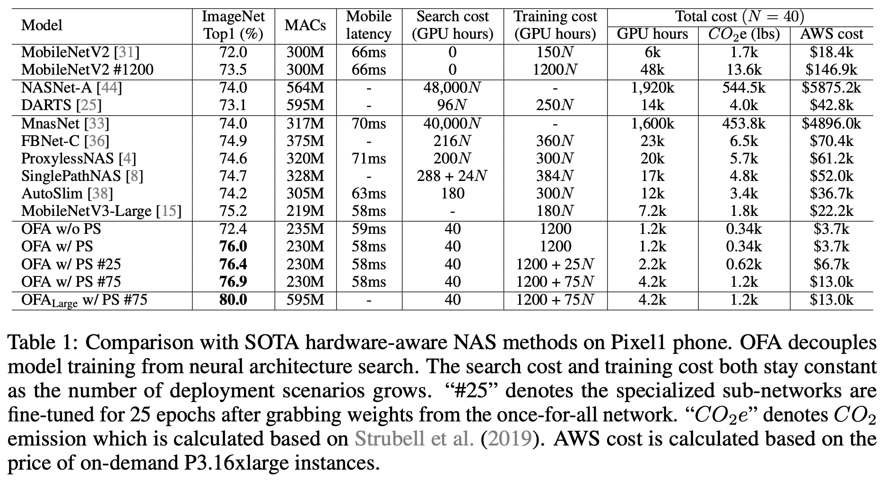

关注公众号【算法码上来】，每日算法干货马上就来！

前言
最近读了不少神经架构搜索（NAS）的论文，把NAS的整体脉络大致摸清了。
但是也发现了NAS目前还是用在CV领域居多，NLP领域和移动端优化寥寥无几。因此这里分享几篇NLP或者移动端上的NAS论文。
刚入门，很多不懂，理解有误或者有更多推荐的相关论文都可以评论区留言。
AMC
[ECCV 18] AMC: AutoML for Model Compression and Acceleration on Mobile Devices
动机
以往的压缩策略或者说剪枝率都是人工调的，而本文提出了一直基于强化学习的剪枝方法，每层剪枝率可以单独调。
方法
从最下面一层开始，编码整个网络的状态。然后用强化学习生成下一层的剪枝率，更新状态。最后的reward可以是压缩率、延时、FLOPs等等。actor用的是DDPG，action定义为(0, 1]之间的稀疏率。
上面是剪枝和状态更新过程。
应用场景分为两种，一种是资源受限条件下寻找效果最高的模型，这种情况reward就直接定义为效果就行了，而资源的限制设定在了action空间里，就是上图伪代码做的事情。另一种是效果不变的情况下，压缩的尽量小，这种情况就要改reward，本文设定为了$R = -L \cdot \log(\text{Params})$，这里改成FLOPs也是可以的，因为参数量前面加了$\log$，所以参数量的下降产生的奖励非常小，这就能一定程度上防止效果下降过多。延时的话本文认为和FLOPs基本正相关，因此直接优化FLOPs就行了（其实很多地方不是这样，比如考虑到并行等）。
实验
相同稀疏率情况下，效果更好。
评价
可以针对不同设备，自动搜出最佳的压缩策略，对于平衡效果和压缩率/加速比非常友好。
TextNAS
[AAAI 20] TextNAS: A Neural Architecture Search Space Tailored for Text Representation
动机
大多数NAS方法集中在搜索策略的设计上，但是本文重点在定义了一个很好的搜索空间，包含了文本处理里面常用的一些操作符。
方法
本文发现NLP领域cell搜索不如直接搜整个网络效果好。搜索空间定义为了卷积层、池化层、双向循环结构（GRU）、注意力层。搜索算法就是用的ENAS，并且每个layer只能选择前面k=5个layer作为输入，这样可以减小搜索空间，但其实这样也丢失了长距离的残差连接。
实验
这篇是做效果提升的，因此可以看到在很多数据集上效果都超过了之前的模型。
评价
感觉上和ENAS差别不是很大，就是搜索空间针对NLP任务做了一些扩展。此外搜索目标只是效果，并没有考虑到延时等条件。
ET
[ICML 19] The Evolved Transformer
动机
这篇是想搜出一个效果更好的Transformer结构。
方法
搜索空间也是cell堆叠，每个cell里面encoder有6个block，decoder有8个，这样是为了初始化的时候能重现Transformer结构。
演化算法初始个体就用的是Transformer结构，这样收敛的更快一点。为了加快搜索速度，采用了Progressive Dynamic Hurdles的方法，过程是这样的：初始种群全部训练到一定步数后early stop，算出平均适应度。接下来后代训练到相同步数后，适应度高于平均值的继续训练一定步数后early stop，其余的直接early stop。然后更新这个early stop的步数和对应的适应度平均值，继续演化出后代。
实验
可以看出，在多个不同模型大小设置下，ET效果都要高于Transformer，而且越小效果越好。
评价
大力出奇迹，效果也不错，但是缺点就是搜索时间太长了。
OFA
[ICLR 20] Once for All: Train One Network and Specialize it for Efficient Deployment
动机
NAS能减小目标设备上的延时，但是对于每个设备都得retrain，甚至得重新搜索结构。所以本文只需要训练一次，对于每个设备只需要几分钟就能搜出最优结构，并且不需要retrain。
方法
首先train一个超网络，然后采用progressive shrinking进行子网络的采样和finetune，progressive shrinking会同时训练各个大小的网络，这样不同子网络之间性能都能达到比较好。
最后训练一个（模型结构，准确率）的预测器，再维护一个（模型结构，目标设备，延时/FLOPs）的loopup table，用演化算法直接搜一个目标设备上最优的模型。因为是帕累托最优，所以寻找的是小于限定延时/FLOPs情况下最佳效果的模型。
实验

相同延时的情况下效果会好很多。搜出结构之后再finetune会更好。搜出结构后从头train效果很差，说明pretrain的weight是有用的。
评价
移动端部署很好用，只需要train一次，速度非常快，progressive shrinking解决了多个子网络互相影响的问题。
HAT
[ACL 20] HAT: Hardware Aware Transformers for Efficient Natural Language Processing
动机
Transfomer部署到不同终端，NAS费时费钱。
方法
其实就是把OFA照搬到Transformer上，这里连progressive shrinking都没用，直接uniform采样，貌似也没有用不同size的模型联合训练。
实验
评价
我感觉相比于OFA创新很小，就是设计了一下Transformer的搜索空间，其他基本差不多。
后记
目前看来，AMC、OFA和HAT是之后可以尝试的工作。
如果想不改变结构，单纯通过剪枝压缩的话，可以尝试用AMC在相同压缩率或延时的情况下达到更好的效果。
而如果想要更深一步优化延时和压缩率，可以尝试OFA的方法，这种方法只需要train一次超网络，训练过程中采用技巧防止子网络性能互相影响即可。最后针对不同设备直接搜出最优结构就行了，不需要在评估过程中重新训练。因此速度非常快，也很方便。
OFA和HAT的代码也都开源了，可以按照教程试一试，我试了在ImageNet上搜出一个比较好的模型还是非常快的。不考虑pretrain的时间，对于每个设备只需要几十秒就搜出来了。
OFA：
https://github.com/mit-han-lab/once-for-all
HAT：
https://github.com/mit-han-lab/hardware-aware-transformers
此外AMC也有两个很nice的工具包都集成进去了：
Intel：
https://github.com/IntelLabs/distiller/tree/master/examples/auto_compression/amc
MicroSoft：
https://github.com/microsoft/nni/tree/master/examples/model_compress/amc